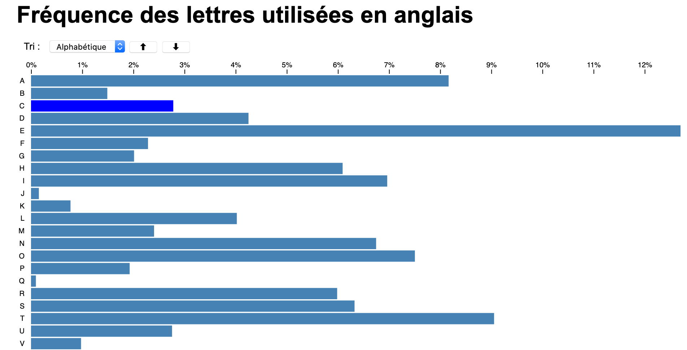

Objectif du TP
Réorganiser un barchart.
1. Démarrage du TP
Vous pouvez partir de cet exemple de barchart
2. Inverser l'ordre des lignes
Inversez l'ordre d'affichage des lignes pour que l'ordre alphabétique aille du haut vers le bas.
3. Ajout d'un menu de tri
En vous inspirant de ce code, rajouter un menu qui vous permette de choisir le tri de votre barchart (alphabétique, fréquence, poid).
4. Ajout d'un menu de tri
Quand un tri est sélectionné, appliquer le à la visualisation. (intro au tri d3, comprendre le tri)
5. Ajout d'un deuxième graphique
Ajoutez un deuxième graphique à côté du premier (ajuster les tailles et positions au besoin). Ce dernier représentera les fréquences de lettres en Français - données.
Faites en sorte que le tri fonctionne pour les deux graphiques
6. Synchronisation entre les graphiques
En suivant ce guide (partie 9.1 et 9.2). Faites en sorte le hover sur la barre d'une lettre sur un graphique souligne la lettre sur l'autre graphique.
Rendu pour ce TP
Le rendu final est pour le mercredi 18 décembre à 23h59, en utilisant le formulaire suivant (rendu TP5). Le TP peut se faire en binôme.